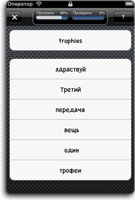
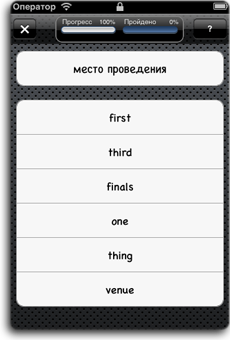
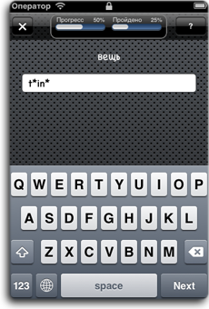
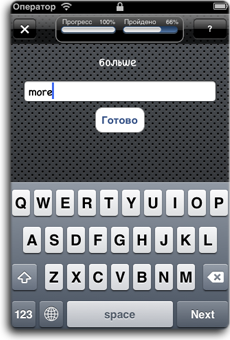
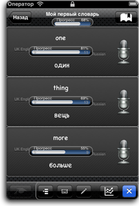

Лучше один раз написать, чем сто раз сказать! Закрепляйте ассоциации "слово-перевод" и тренируйте свое правописание при помощи специальных упражнений.
Для свободного владения иностранным язиком одного только устного общения мало. Правописание очень важно при изучении язика. Для улучшения правописания слов в iLearnWords разработана серия упражнений которые делают процесс обучения интересным и эффективным.
Обучение состоит в выполнении трех основных упражнений для выбранного словаря. От первого знакомства со словом, Вы можете перейти к упражнению, позволяющему закреплять ассоциации "слово-перевод".
Упражнение "Выбор слова": нужно выбрать правильный вариант слова/перевода для указанного перевода/слова из предложенных вариантов.


После того как Вы закрепили ассоциации "слово-перевод". Пора перейти к болле сложному упражнению "Буквы".
Упражнение "Буквы": требуется набрать буквы слова на клавиатуре, перевод указан над полем ввода, звездочками показано количество букв проверяемого слова. При вводе - буквы будут подставляться вместо звездочек.

Последнее упражнение закрепит знания в правописании слов.
Упражнение "Написание": в етом упражнении Вам предстоит безошибочно написать слово для каждого перевода.

Все результаты прохождения упражнений будут записываться. Вы всегда сможете посмотреть статистику успеваемости, и при желании подучить упущенное.
